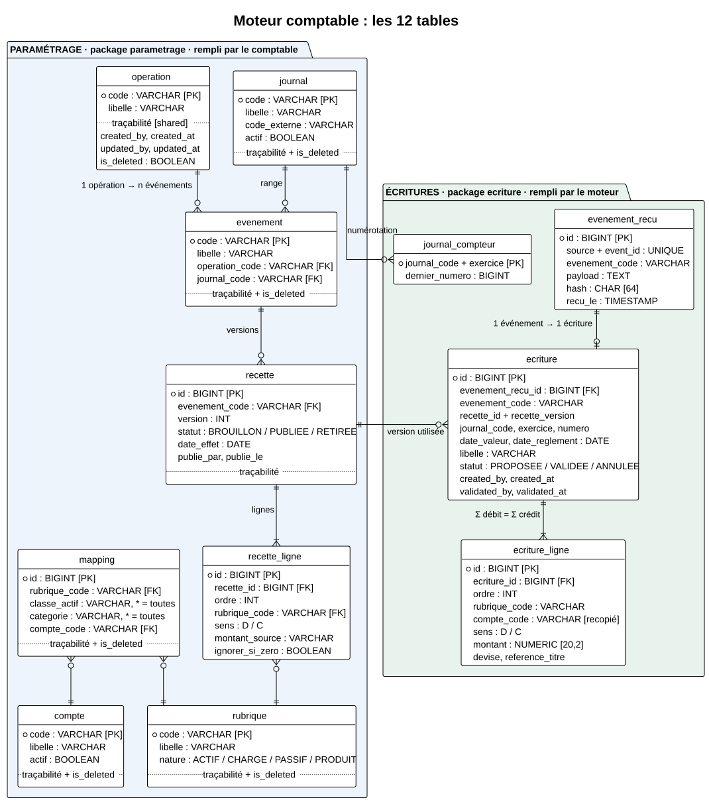

Les tables du moteur comptable
Vocabulaire. À l’écran, on dit « règle d’événement » (le mot du financier et du recueil ; « schéma d’écriture » dans le guide développeurs). Dans la base, la table s’appelle recette.
- Colonnes communes (package `shared`)
- A. Paramétrage (package `parametrage`)
- B. Écritures (package `ecriture`)

Schéma : tables.png (source tables.puml). 12 tables en deux familles : le paramétrage, que le comptable remplit, et les écritures, que le moteur produit.
Prototype : Hibernate crée les tables à partir des entités. La version finale passera par des scripts de migration.
Colonnes communes (package shared)
| Colonne | Type | Pourquoi |
|---|---|---|
created_by | VARCHAR | Savoir qui a créé la ligne. Rempli tout seul à partir de l'en-tête HTTP X-Utilisateur |
created_at | TIMESTAMP | Savoir quand. Rempli tout seul |
updated_by | VARCHAR | Savoir qui a modifié en dernier |
updated_at | TIMESTAMP | Savoir quand |
is_deleted | BOOLEAN | Suppression douce : la ligne reste en base, car des écritures passées peuvent y faire référence, mais elle disparaît des recherches. Refusée tant que l'élément est utilisé |
Classes : EntiteAuditee (les quatre premières colonnes) et EntiteSupprimable (+ is_deleted).
Les écritures n'ont pas de is_deleted. Une écriture comptable ne se supprime pas : on la corrige par une écriture inverse. Une règle d’événement non plus : on la retire.
A. Paramétrage (package parametrage)
operation : la famille d'action
| Colonne | Type | Pourquoi |
|---|---|---|
code | VARCHAR, clé | Identifiant stable, utilisé par les événements. Ex. ACHAT |
libelle | VARCHAR | Le nom affiché |
Règles : code unique ; suppression refusée si un événement l'utilise.
journal : le classeur des écritures de même nature
| Colonne | Type | Pourquoi |
|---|---|---|
code | VARCHAR, clé | Ex. PLA (placements). Sert aussi de préfixe au numéro d'écriture : PLA-2026-0001 |
libelle | VARCHAR | Le nom affiché |
code_externe | VARCHAR | Le code du même journal dans le logiciel comptable de la compagnie, pour l'export. Facultatif |
actif | BOOLEAN | Un journal fermé ne reçoit plus d'écritures, mais garde les anciennes |
Règles : paramétré une fois puis choisi dans une liste, pour éviter les fautes de frappe ; suppression refusée si un événement l'utilise.
evenement : le fait précis
| Colonne | Type | Pourquoi |
|---|---|---|
code | VARCHAR, clé | Ce que l'application source envoie. Ex. ACQ_OBLIGATION |
libelle | VARCHAR | Le nom affiché |
operation_code | VARCHAR, FK | Une seule opération par événement (règle du financier). Une seule colonne rend la règle impossible à contourner |
journal_code | VARCHAR, FK | Le journal où vont toutes ses écritures. Défini une fois ici, plutôt qu'à chaque écriture |
Règles : opération et journal existants et ouverts ; suppression refusée tant qu'une règle d’événement publiée existe.
rubrique : le nom d'une ligne d'écriture
| Colonne | Type | Pourquoi |
|---|---|---|
code | VARCHAR, clé | Ex. R01. Les recettes parlent en rubriques, jamais en numéros de compte |
libelle | VARCHAR | Ex. « Valeur d'inscription du titre » |
nature | ACTIF / CHARGE / PASSIF / PRODUIT | Dit ce que représente la ligne, et donc de quel côté elle augmente (actif et charge au débit, passif et produit au crédit) |
Règles : nature obligatoire ; suppression refusée si un mapping ou une règle d’événement l'utilise.
compte : une page du grand livre
| Colonne | Type | Pourquoi |
|---|---|---|
code | VARCHAR, clé | Le numéro du plan de comptes de la compagnie. Ex. 2745 |
libelle | VARCHAR | Ex. « Titres souverains » |
actif | BOOLEAN | Un compte fermé ne reçoit plus de lignes, mais reste lisible dans l'historique |
Règles : suppression refusée si le mapping l'utilise.
mapping : le répertoire rubrique → compte
| Colonne | Type | Pourquoi |
|---|---|---|
id | BIGINT, clé | Identifiant technique |
rubrique_code | VARCHAR, FK | La rubrique à traduire |
classe_actif | VARCHAR | Ex. OBLIGATION. * = toutes. Une obligation et une action vont dans des comptes différents |
categorie | VARCHAR | Ex. ETAT, SOCIETE. * = toutes. Un titre d'État et un titre de société vont dans des comptes différents |
compte_code | VARCHAR, FK | Le compte trouvé |
Règles : rubrique existante, compte existant et ouvert, une seule ligne par combinaison. La ligne la plus précise gagne (classe exacte +2, catégorie exacte +1). Grâce au mapping, une seule règle d’événement sert à toutes les compagnies : seul le répertoire change.
recette : la définition d'un événement, versionnée
| Colonne | Type | Pourquoi |
|---|---|---|
id | BIGINT, clé | Identifiant d'une version précise |
evenement_code | VARCHAR, FK | L'événement décrit |
version | INT | 1, 2, 3… Changer une règle d’événement crée une version, sans toucher aux écritures passées |
statut | BROUILLON / PUBLIEE / RETIREE | Seule une version publiée sert. Publiée = figée |
date_effet | DATE | À partir de quand la version s'applique |
publie_par, publie_le | VARCHAR, TIMESTAMP | Qui a publié, et quand : la décision métier, en plus de la traçabilité technique |
Règles : au moins une ligne au débit et une au crédit pour publier ; aucune modification après publication.
recette_ligne : une ligne de la recette
| Colonne | Type | Pourquoi |
|---|---|---|
id | BIGINT, clé | Identifiant technique |
recette_id | BIGINT, FK | La version parente |
ordre | INT | L'ordre des lignes dans l'écriture |
rubrique_code | VARCHAR, FK | Quelle ligne écrire. Pas de compte ici : il vient du mapping |
sens | D / C | Débit (où va la valeur) ou crédit (d'où elle part) |
montant_source | VARCHAR | Le nom du montant à lire dans l'événement. Ex. nominal. Le moteur ne calcule rien |
ignorer_si_zero | BOOLEAN | Ligne facultative : pas de frais, pas de ligne de frais |
B. Écritures (package ecriture)
evenement_recu : ce que l'application source a envoyé
| Colonne | Type | Pourquoi |
|---|---|---|
id | BIGINT, clé | Identifiant technique |
source | VARCHAR | Qui envoie. Ex. SIGAP |
event_id | VARCHAR | L'identifiant donné par la source. (source, event_id) unique : le même événement ne crée qu'une écriture |
evenement_code | VARCHAR | Le type d'événement |
payload | TEXT | Le contenu reçu, gardé tel quel : preuve et rejeu |
hash | CHAR(64) | Empreinte SHA-256 du contenu. Même identifiant mais empreinte différente = collision, refusée sans rien écraser |
recu_le | TIMESTAMP | Heure de réception |
ecriture : l'en-tête
| Colonne | Type | Pourquoi |
|---|---|---|
id | BIGINT, clé | Identifiant technique |
evenement_recu_id | BIGINT, FK | Remonter à l'événement d'origine |
evenement_code | VARCHAR | Lire l'écriture sans jointure |
recette_id, recette_version | BIGINT, INT | La version de règle utilisée, figée : une règle d’événement changée plus tard ne touche pas cette écriture |
journal_code | VARCHAR | Le journal, repris de l'événement |
exercice | INT | L'année comptable. La numérotation repart à 1 chaque exercice |
numero | VARCHAR | Ex. PLA-2026-0001. Attribué à la validation, sans trou. Vide tant que l'écriture est proposée |
date_valeur | DATE | La date de l'opération, qui choisit la version de règle en vigueur |
date_reglement | DATE | La date du paiement, qui peut être différente |
libelle | VARCHAR | Le texte de l'écriture |
statut | PROPOSEE / VALIDEE / ANNULEE | Validée = figée |
created_by, created_at | VARCHAR, TIMESTAMP | Qui a préparé l'écriture |
validated_by, validated_at | VARCHAR, TIMESTAMP | Qui a validé. Différent du créateur (règle des 4 yeux) |
ecriture_ligne : une ligne de l'écriture
| Colonne | Type | Pourquoi |
|---|---|---|
id | BIGINT, clé | Identifiant technique |
ecriture_id | BIGINT, FK | L'écriture parente |
ordre | INT | L'ordre d'affichage |
rubrique_code | VARCHAR | La rubrique de la règle d’événement |
compte_code | VARCHAR | Recopié au moment de la génération : un mapping changé demain ne modifie pas l'écriture d'hier |
sens | D / C | Débit ou crédit |
montant | NUMERIC(20,2) | Décimal exact. Jamais de nombre à virgule flottante pour de l'argent |
devise | CHAR(3) | Ex. XOF |
reference_titre | VARCHAR | Le titre concerné, pour la balance titre par titre |
Règle : sur chaque écriture, total des débits = total des crédits, avec au moins une ligne de chaque côté.
journal_compteur : la numérotation sans trou
| Colonne | Type | Pourquoi |
|---|---|---|
journal_code, exercice | clé | Un compteur par journal et par année |
dernier_numero | BIGINT | Le dernier numéro donné |
Pourquoi une table plutôt qu'une séquence de base : une séquence saute des numéros quand une transaction échoue. Ici, la ligne est verrouillée (SELECT … FOR UPDATE) pendant la validation, puis augmentée de 1 dans la même transaction : ni trou, ni doublon.